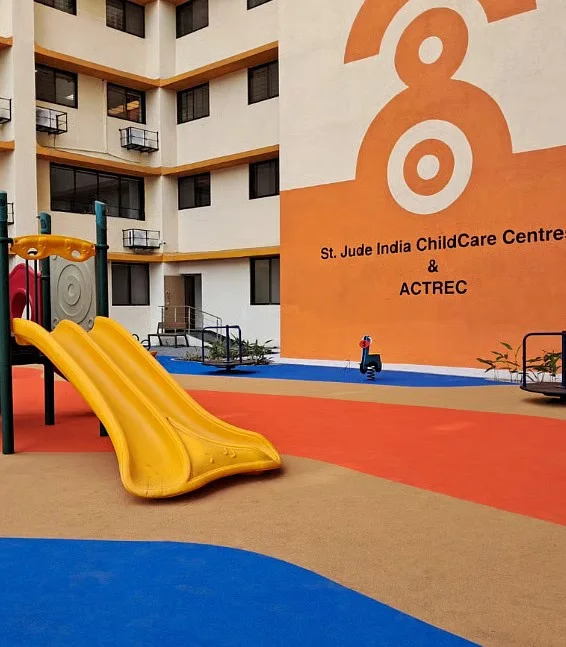

01
02
PROJECT OVERVIEW
OVERVIEW
This project explores care delivery at St. Jude ChildCare Centres through the perspective of staff responsible for monitoing, coordination and ensuring safety.
- DURATION
- 4 months
(Field Visits & Research - DOMAIN
- Service Design
- FOCUS AREA
- Staff Perspective
- METHODS
- Field Visits, Observations,
Stakeholder Interactions - OBJECTIVE
- To identify gaps in coordination and propose a structured service to support staff more effectively.
- OUTCOME
- System Intervention

03
PROBLEM DISCOVERY
Why This Matters
This gap leads to inconsistent care practices, delayed responses, and high dependence on manual monitoring.
Staff effort increases while system reliability decreases, directly affecting child safety.
Initial Problem
Staff are accountable for maintaining care quality, but do not have direct control over how care is executed daily.
This creates a gap between responsibility and action.
Nature of the Problem
The problem is systemic and coordination-driven.
It involves multiple stakeholders with no structured flow of information.
It is a breakdown in continuity, communication, and timely response.
HOW MIGHT WE: How might we enable staff to ensure consistent, timely and reliable care without increasing manual workload or dependency on informal coordination?
04
St. Jude India
ChildCare Centres
Secondary Research
NGO–Government Collaboration in Healthcare – 2025 Study
System Fragmentation:
Absence of integrated platforms causes poor coordination, delayed responses, and difficulty in tracking patient data across stakeholders
Existential issues among health care staff in surgical cancer care – Discussions in supervision sessions
Healthcare professionals face moral distress when treatments are limited, leading to burnout, emotional fatigue, and questioning of professional purpose.
Oncology Residency–a Burning Issue, Results of a Questionnaire-Based Survey on Psychological Well-being of Oncology Residents
Patient-Related Distress:
Limited ability to prolong life for many patients, leading to feelings of helplessness and powerlessness
05
St. Jude India
ChildCare Centres
Secondary Research
Health Information Management in Low-Resource Settings – Case Review
Data Management Gap:
The study highlights that healthcare systems in low-resource settings heavily rely on paper-based records, which often leads to data loss, duplication, and human errors. It also makes it difficult for staff to quickly access patient history, especially during emergencies, delaying timely care and decision-making.
Level of Motivation Amongst Health Personnel
A cross-sectional study of 200 healthcare workers in a Delhi government hospital examined five motivation factors: drive, control, challenge, relationships, and rewards. It found that different roles value different factors. Doctors and technicians prioritize relationships, while nurses and support staff value autonomy and recognition.
The study highlights that a supportive work environment is essential for improving productivity in public healthcare systems.
Challenges and opportunities for future health policy
Resource Limitation Impact:
Healthcare staff in NGO-based systems often operate with limited infrastructure and support.
This restricts access to timely information and structured tools, forcing staff to rely on personal judgment and experience.
Such conditions increase stress levels and can affect consistency and accuracy in care-related decisions.
06
Text on this slide, in the order it is stored in the file:
USER INTERVIEWS Daily care workflows and responsibilities Night-time support and emergency handling Communication methods (staff ↔ parents ↔ centre) Documentation and tracking practices Challenges in coordination and response Method Semi-structured interviews Supported by observational notes Fly on the wall Centre Officer Daily operations, parent coordination, emergency handling Centre Lead Center management, system coordination, decision-making 2. Communication & Coordination How do you communicate with parents during the day? What tools or methods are used (calls, WhatsApp, verbal)? How is information shared between staff members? 3. Night-Time & Emergencies What happens after staff hours? How are emergencies handled at night? Who takes responsibility in urgent situations? What challenges do parents face during emergencies? 4. Challenges & Gaps What are the biggest difficulties in managing care? Where do delays or confusion usually happen? What would make the system easier for you? 1. Daily Care Workflow How does a typical day at the centre operate? What are your key responsibilities throughout the day? How do you track a child’s health and routine?
07
Text on this slide, in the order it is stored in the file:
“Madam log bahut supportive hain, kuch bhi chahiye ho toh bol sakte hain.” -Parent “Yahan activities aur dance se thoda emotional support milta hai.” -Parent “Rules ke hisaab se sab karna mushkil hota hai, par manage ho jata hai.” -Parent “Routine humare achhe ke liye banaya gaya hai.” -Parent “Yahan stitching, weaving aur mobile repairing ka training milta hai.” -Parent “We maintain temperature sheets and records, but everything is mostly manual.” -Staff “After staff hours, it becomes difficult to monitor everything continuously.” -Staff “We explain everything to parents, but in stressful situations they still get confused.” -Staff “Sometimes the same information has to be repeated to different people.” -Staff VERBATIMS
08
Text on this slide, in the order it is stored in the file:
core involved informed Patient CareGiver Staff Educators Donors & Funding Partners Volunteers Cleaning staff Transport staff Counsellors Anchor Stakeholder- Operational Staff Audit Staff Hospitals Hospitals HR Data & Reporting Systems STAKEHOLDER MAPPING
09
Text on this slide, in the order it is stored in the file:
MIND MAP
10
Text on this slide, in the order it is stored in the file:
STAKEHOLDER ECOSYSTEM MAP
11
Text on this slide, in the order it is stored in the file:
Operations Corporates Affiliates Donors Volunteers Children Parents St. Judes Facilities TATA Memorial Campus ACTREC Community of St. Judes (Judians) Society at Residency Anchor node Empathy Square Service Provider Organisation Environment, society & Governance Service users Human Touchpoints (service staffs) EMPATHY SQUARE
12
Text on this slide, in the order it is stored in the file:
St. Jude India ChildCare Centres Operations Program Lead Centre Lead Centre Officer Maintainance & Cleaning Staffs Security Gurads Intent Concern Constraints Expectations Resources To supervise operations across centres To manage operations To assist Families, record keeping To keep the facility hygenic To regulate entry & exits Limited visibility, manual reporting, coordination overload, compliance management. Standardized operations, timely escalation, cross- functional coordination, optimal resource utilization. MIS reporting, centre-led execution, funding frameworks, SOP compliance Operational breakdowns, family complaints, staff inefficiency, emergency management. Limited staffing, budget constraints, vendor dependency, empathy-rule balance. Centre staff, vendor support, operational budget, program guidelines. Emotional strain, documentation errors, language barriers, multitasking pressure. Clear task allocation, efficient record-keeping, leadership support, cooperative families. Digital records, communication channels, family management guidelines, support staff. Infection risks, supply shortages, heavy workload, low recognition. fixed schedules; procurement delays; low specialized training Clear protocols; adequate supplies; respectful environment; defined roles Cleaning tools; SOPs/checklists; supervision; basic training Unauthorized access, visitor conflicts, unclear protocols, fatigue. limited authority; lack of training; long shifts Regulate entry & exits, Clear policies; admin support; structured shifts; basic facilities Entry registers; ID systems; communication with staff; security agency
13
Text on this slide, in the order it is stored in the file:
I N C O N T N U O U S C A R E S Y S T E M S UNDERSTANDING USER PERSPECTIVE
14
Text on this slide, in the order it is stored in the file:
INSIGHTS CLUSTERING
15
Text on this slide, in the order it is stored in the file:
PROBLEM SYNTHESIS
16
Text on this slide, in the order it is stored in the file:
I N C O N T N U O U S C A R E S Y S T E M S VALUE CREATION MAP
17
Text on this slide, in the order it is stored in the file:
VALUE UNDERSTANDING
18
Text on this slide, in the order it is stored in the file:
VALUE CO-CREATION
19
Text on this slide, in the order it is stored in the file:
VALUE FLOW DIAGRAM
20
PROBLEM IDENTIFICATION
1. Lack of Continuity
Care is continuous
Support is time-bound
2. Informal Communication
Reliance on WhatsApp / verbal updates
No structured escalation
3. High Staff Dependency
All decisions route through staff
Creates overload
4. Night-Time Visibility Gap
No staff presence
Limited monitoring at night
5. Parent Capability Variability
Different parents have different skills
6. Lack of Accountability Structure
Tasks are shared
But responsibility is unclear
7. Manual Data Dependency
Paper logs and manual entry
Prone to errors and delays
8. Fragmented System
Multiple touchpoints
No unified system
9. Emotional Burden on Staff
Staff handles coordination and emotional support
Leads to fatigue and burnout
10. Lack of Standardized Emergency Protocols
Leads to inconsistent and delayed responses
21
Text on this slide, in the order it is stored in the file:
USER PERSONA 1: STAFF GROUP ROLES Monitor parents and children Ensure hygiene and compliance Handle coordination and emergencies GOALS Maintain safe and consistent care Ensure parents follow protocols Respond quickly to risks PAIN POINTS \ High workload and responsibility No visibility during night Dependence on manual tracking Informal communication channels Risk prioritization Clear escalation flow Reduced cognitive load NEEDS “We are responsible for everything, but we don’t always have visibility or control.” Center Lead + Center Officers Center Lead (1) Center Officers (2) Structured system for monitoring USER PERSONA 2: FAMILY GROUP ROLES Perform daily care tasks Monitor child’s health Follow center guidelines GOALS Keep child safe and stable Follow correct care practices Get timely help when needed PAIN POINTS \ Confusion during emergencies Lack of guidance at night Emotional stress and anxiety Different understanding of care practices Clear instructions Reassurance and confidence Immediate support access Simple communication channel NEEDS Parents + Child (Care Unit) GROUP COMPOSITION Mother (Primary Caregiver) Father (Support Role) Child (Patient) “We try our best, but we don’t always know what to do in critical moments.”
22
Text on this slide, in the order it is stored in the file:
STORYBOARDING
23
MOSCOW METHOD
Mo
- Night-time alert system
- Structured escalation flow
- Staff dashboard (basic)
- Emergency response protocol
S
- Risk-based prioritization
- Parent guidance system
- Centralized communication channel
Co
- Behaviour tracking over time
- Automated reminders
- Incident history visualization
W
- Full hospital integration
- AI-based predictions
- Complex analytics system
24
Text on this slide, in the order it is stored in the file:
Continuous Care Support System Enable support beyond staff hours Ensure care continuity Centralized Care System One unfed platform All data & actions in one place Standardized Emergency Protocols Clear step-by-step responses Consistent actions across users Structured Communication System Defined alert & escalation flow Reduce dependency on informal channels Night-time Monitoring Support Dedicated support at night Quick responses to emergencies Staff Dashboard & Priortization Identify high-risk families Enable faster decision making Automated Data Logging Reduce manual work Minimize errors & delays Task & Responsibility Mapping Clear role allocation Improved accountability Guided Parent Support System Simple instructions for daily care Reduce confusion & dependency Emotional Support for Staff Reduce cognitive load Support better decision-making Training & Awareness Modules Standardise understanding Improve parent capability SYSTEM-LEVEL SOLUTIONS OPERATIONS SOLUTIONS HUMAN-CENTERED SOLUTIONS Continuous Support System Staff-centered coordnation Structured communication | | FOCUSED DIRECTION SOLUTION BRAINSTORMING
25
Text on this slide, in the order it is stored in the file:
Daily Weekly Monthly Initial Mid End OPERATION STAFF JORUNEY
26
Text on this slide, in the order it is stored in the file:
Feelings and thoughts Operations Associate Age: 30 Location: Kharghar Centre Experience: 2+ years Operations Associate Managing centre operations, monitoring, hospital coordination, and reporting for families during treatment stay. Expectations Smooth centre functioning Emotional and operational availability Accurate records with timely escalations Minimal disruption during high occupancy Morning Compliance Attendance Scan Daily Activities Social Touchpoints Issue Resolution Health Logging Treatment Logging End of the day Start of the day Actions Technological assistance Pain Points 😌 🙂 😐 😫 Satisfaction Positive Neutral Low Need to stay alert and updated Planning tasks for the day Catching up on pending issues Responsible for hygiene and safety Need to ensure everyone follows rules Constant monitoring required Busy managing multiple families Handling queries and delays Ensuring accuracy Sense of purpose Supporting emotional well- being Managing coordination Building trust with families Providing emotional comfort Listening to concerns Alert and slightly stressed Need to manage conflict calmly Pressure to resolve quickly Tired from repetitive tasks Time pressure Need for accuracy Concern for family well-being Responsibility for follow-ups Dependence on staff guidance Physically and mentally exhausted Need to wrap up tasks Hoping next shift continues smoothly Arrive at centre Check schedule Recall pending issues Take handover from previous shift Hygiene checks (kitchen, rooms, washrooms) Verify task completion Remind parents about routines Scan parent QR Scan child QR Mark attendance Resolve scanning issues Oversee activities Send children to classes Support prayer/events Coordinate volunteers Informal conversations (tea time) Listen and support families Share important updates Build relationships Identify issue/conflict Talk and resolve Escalate to centre lead if needed Log informally Collect temperature sheets Verify entries Enter data into MIS Record observations Check treatment adherence Follow up with families Remind for medication/hospit al visits Update MIS Review pending issues Share updates with next shift Handover notes End of day wrap- up WhatsApp communication QR attendance system Temperature sheets (paper- based) MIS system Cryodes Security desk coordination Opportunities Digital checklist with pending tasks Automated reminders for compliance Integrated issue tracking system Auto MIS data entry integration Shift handover dashboard Centralized communication system No centralized view of pending work Heavy reliance on verbal communication Manual and repetitive processes Duplicate data entry (paper → MIS) Informal issue tracking Staff fatigue and burnout OPERATION STAFF- DAILY JOURNEY MAP
27
Text on this slide, in the order it is stored in the file:
Insights Findings Operations staff simultaneously perform three roles : 1.Operations Manager (Scheduling, compliance, coordination 2. Emotional Support Worker (Logging, MIS entry, reporting) 3.Data Administrator (Scheduling, compliance, coordination This overlap creates congnitive load + operational fatigue. Staff workload shifts from human care to administrative burden post mid-day Critical processes rely heavily on informal communication system Emotional interactions like tea build trust and stability for families High human dependency and low system support might be causing operational inefficiency. INSIGHTS
28
Text on this slide, in the order it is stored in the file:
Feelings and Actions Primary Caregiver Age: 22–45 Location: Pan-India Socio-economic: BPL Context: Staying 3–6 months Operations Associate Managing centre operations, monitoring, hospital coordination, and reporting for families during treatment stay. Expectations Clean accommodation near hospital Clear guidance for the period. Emotional reassurance and community support Reliable access to food, resources, and emergency help SETTLEMENT DAILY ROUTINE NIGHT GAP (CRITICAL PHASE) CONTINUOUS CYCLE ADMISSION & ORIENTATION Touchpoints Pain Points Staff Role Feelings: 😟Anxiety → 😣Overwhelm Actions: Arrives at centre after hospital referral Completes admission formalities Receives hygiene + monitoring training Reception staff Orientation session Printed instructions / verbal guidance Information overload Complex medical + hygiene instructions No reinforcement after session Provide orientation Explain protocols Offer visual guides / digital support Feelings: 😐Confusion → 😟Stress Actions: Moves into assigned unit Starts cleaning and organizing Begins maintaining child health logs Room/unit Cleaning supplies Log sheets No clear benchmark of “clean” Inconsistent understanding across families Fear of doing something wrong Provide standardized guidelines Enable real-time feedback system Feelings: 😐Routine → 😫Fatigue Actions: Cleans unit Prepares food Logs child temperature/health Attends hospital visits Kitchen Log sheets Staff rounds Repetitive manual logging Delayed feedback from staff No prioritization of issues Morning rounds Verifying logs Giving corrections Feelings: 😟Fear → 😨Uncertainty Actions: Parent monitors child alone Responds to symptoms Calls staff if needed Phone calls Personal judgment No real-time support Delayed response High dependency on parent awareness Remote support (if contacted) Feelings: 😫😣(Fatigue + stress accumulation) Actions: Repeats daily routine Adjusts based on feedback Reuse previous systems with small additions Accumulated fatigue No system-level improvement FAMILY JOURNEY MAP
29
Text on this slide, in the order it is stored in the file:
Insights Findings Critical processes rely heavily on parent awareness and proactive response End-of-day fatigue increases risk of care errors and incomplete routines Families navigate complex operational & care processes, shifting from high-touch human care (onboarding) to high- effort self-administration. System support must shift from episodic verification → continuous proactive monitoring. Monitoring is episodic, not continuous System becomes reactive, not proactive Opportunities Digital guides Automated prompts Real-time feedback Proactive support Care consistency INSIGHTS
30
Text on this slide, in the order it is stored in the file:
No clear next step No structured entry point No official channel Delayed or no response Feels informal / unreliable No visibility of available slots No clarity on allowed timings Back-and-forth communication Repetitive paperwork No saved profile / history Manual process every time Entry issues at security Name not registered If late → entry denied (Rule is valid, but system support is missing) No structured feedback No documentation of contribution No follow-up No re-engagement No relationship building NIFT Student (Design Student) Intent: Conduct workshop / volunteer Visit based on college schedule Expectations Good cooperation and inviting people. Occasionally contribute skills or time Feelings and thoughts Contact Attempt Planning Visit Pre-Visit Requirements Visit Day Contribution Post-Visit Intent formation Student wants to visit / contribute after attending a program Emotion: 😕Confused but motivated Reaches out via WhatsApp (if number exists) Emotion: 😐Uncertain Tries to align college permission Emotion: 😣Frustrated Needs to: Inform centre in advance Fill forms Get approvals Emotion: 😓Burdened Reaches centreProviding emotional comfort Emotion: 😬Anxious Conducts workshop / activity Emotion: 🙂Satisfied 😶Detached Pain Points Touchpoints Word of mouth WhatsApp Back and forth Paperwork Security desk coordination Interaction CONTRIBUTOR JOURNEY
31
Text on this slide, in the order it is stored in the file:
Customer Actions Line of Interaction On-stage Employee Line of Visibility Backstage Employee Actions Line of internal Interaction Support processes Intake staff Availability checked Admin Operations Staff Central Lead Operations Staff Central Officer Operations Staff Educators Operations Staff Counsellors Eligibility validation, Queue prioritization, room allocation decision Room readiness confirmed, records created Daily schedule mapping for new family Activity schedules maintained Attendance stored, compliance tracked Health logs updated, risk flagged Review escalated Conflicts MIS Cryodes Temperature Sheet QR attendance system Transport Hospital EXISTING SERVICE BLUEPRINT
32
33
34
Text on this slide, in the order it is stored in the file:
INTRODUCTION TO SAHAAY Sahaay is a care coordination system designed for pediatric support centres, where parents manage daily care and staff oversees multiple families. It ensures care continues seamlessly beyond staff hours through structured communication and timely response.
35
Text on this slide, in the order it is stored in the file:
CORE FEATURES
36
IMPACT VS FEASIBILITY MATRIX
- Centralized care system
- Full data integration
- Cross-center coordination
- Night-time alert system
- Structured communication flow
- Staff dashboard
- Emergency protocols
- Advanced analytics
- AI predictions
- Complex automation
- Basic parent instructions
- Manual tracking improvements
- Simple checklists
37
Text on this slide, in the order it is stored in the file:
VALUE FLOW DIAGRAM
38
Text on this slide, in the order it is stored in the file:
STORYBOARDING
39
Text on this slide, in the order it is stored in the file:
Customer Actions Line of Ineteraction On-stage Employee Line of Visibility Backstage Employee Actions Line of internal Interaction Support processes Intake staff Availability checked Admin Operations Staff Central Lead Operations Staff Central Officer Operations Staff Educators Operations Staff Counsellors Eligibility validation, Queue prioritization, room allocation decision Room readiness confirmed, records created Daily schedule mapping Activity schedules maintained Attendance stored, compliance tracked Health logs updated, risk flagged Review escalated Conflicts MIS Cryodes QR attendance system Transport Hospital Sahaay PROPOSED SERVICE BLUEPRINT
40
SERVICE FAILURE
Failure Points
- Lack of continuity during night-time
- Delayed response due to unclear communication
- No structured escalation pathway
- Staff overload leading to missed signals
- Parents unsure about immediate actions
- Fragmented systems across multiple apps
- Incidents not tracked or repeated patterns missed
Recovery Mechanisms
- Continuous care support beyond staff hours
- Structured alert flow across roles
- Clear escalation protocols at each level
- Guided instructions for parents during emergencies
- Centralized dashboard for real-time visibility
- System-based tracking of high-risk cases
- Automated logging to reduce manual errors
41
Text on this slide, in the order it is stored in the file:
Staff Night-Time Support System Staff Dashboard & Prioritization Guided Care System (Parent Support) System Memory & Tracking Kindness Crew Integration Alert & Escalation System Child Gets timely alerts Reduces dependency on informal communication Reduces pressure of being always available Ensures continuity Clear visibility Faster decision- making Reduced cognitive load Reduces repeated guidance Less dependency Identifies high-risk patterns Better long-term decisions Reduces workload Extra support during emergencies Parents Easy way to ask for help No confusion during emergencies Feel supported at night Less anxiety Get timely attention if high-risk Clear instruction s Increased confidence Improved follow-ups Accountabi lity Immediate help availability Faster response to critical situations Continuous care and safety Prioritized care More consistent care Safer, data- backed care Faster care support VALUE PROPOSITION
42
IMPACT
System Impact
- Shift from fragmented to integrated care system
- Seamless information flow across stakeholders
- Real-time tracking of care activities
- Stronger system accountability
Operational Impact
- Faster response time during emergencies
- Reduced communication gaps
- Better shift handovers (day to night)
- Efficient resource allocation based on risk
Behavioral Impact
- Staff becomes more proactive than reactive
- Parents feel empowered instead of dependent
- Reduced panic in emergency situations
- Increased trust in system-led care
43
FUTURE SCOPE
Scalability
- Can be implemented across multiple centres
- Adaptable to different healthcare contexts
- Supports growing number of families and staff
System Expansion
- Integration with volunteer & contributor system
- Linking with hospital data systems
- Adding predictive alerts for high-risk cases
- Inclusion of remote medical consultation
Long-term Integration
- Builds a data-driven care ecosystem
- Enables continuous improvement through insights
- Supports policy-level standardization
- Evolves into a comprehensive care coordination platform
44
Text on this slide, in the order it is stored in the file:
BEHIND THE SCENES
45
Text on this slide, in the order it is stored in the file:
Thank You